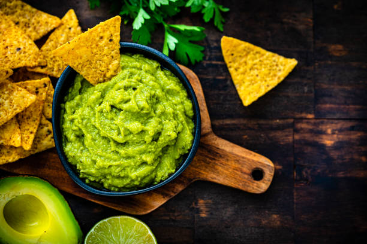
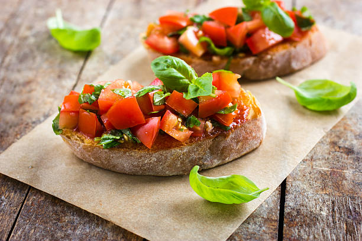
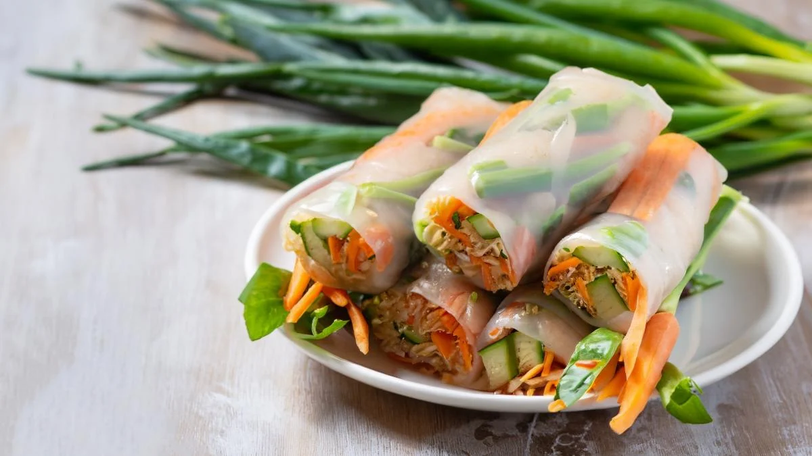
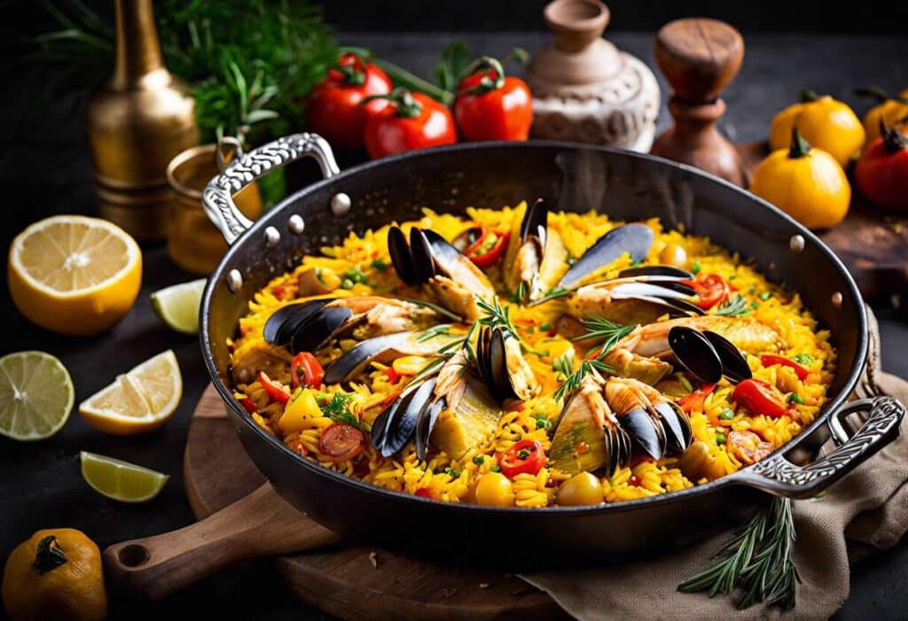
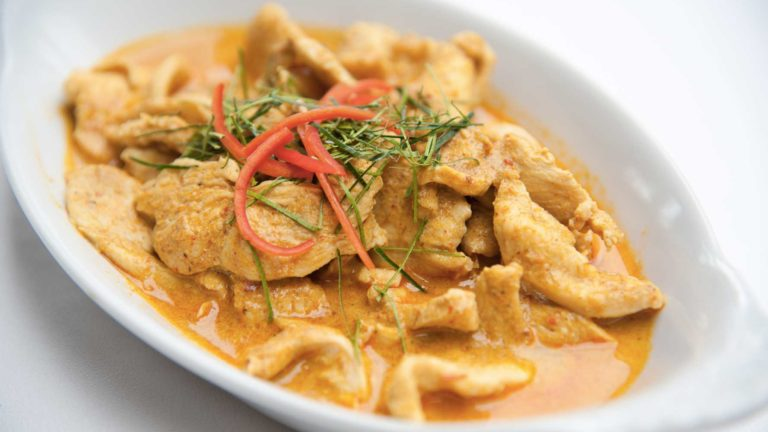
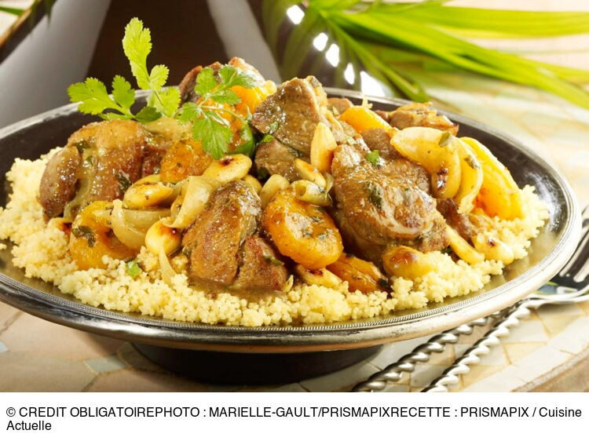
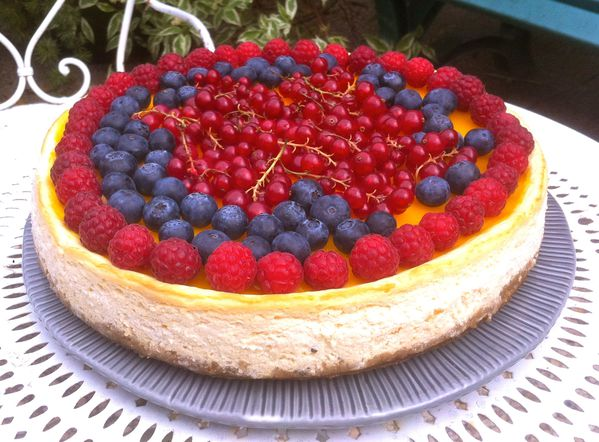
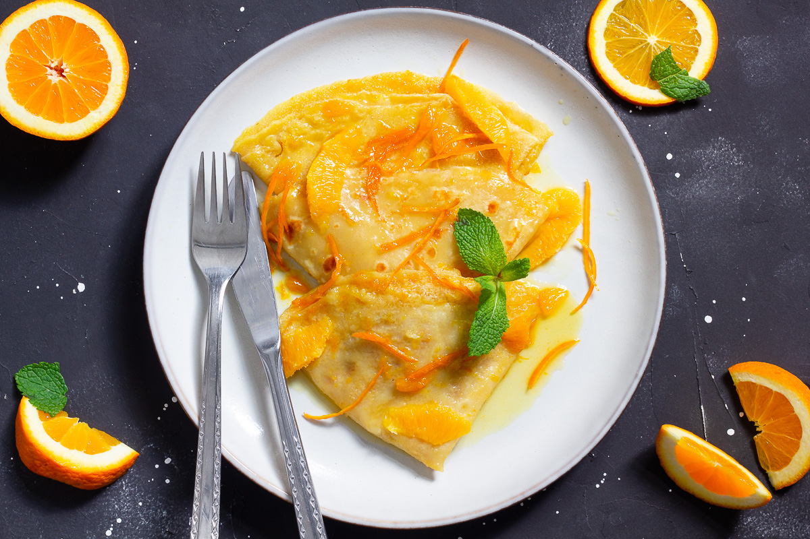
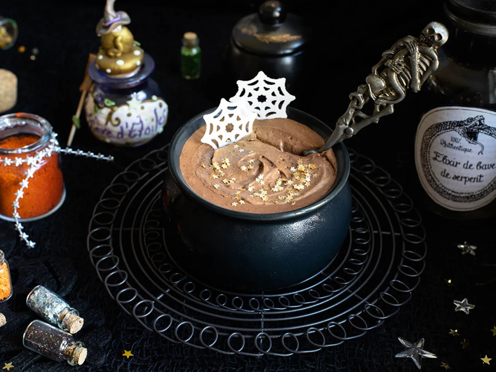

|  | Guacamole et tortillas: Avocats mûrs écrasés mélangés avec du citron vert, de la coriandre et servi avec des chips de maïs. |
|  | Bruschetta aux tomates: Pain grillé garni de tomates fraîches, basilic, ail et un filet d'huile d'olive. |
|  | Rouleaux de printemps: Légumes frais et crevettes enroulés dans des feuilles de riz, servis avec une sauce aux arachides. |
|  | Paella valencienne: Un mélange de riz, fruits de mer, poulet et légumes, parfumé au safran. |
|  | Curry thaï au lait de coco: Poulet ou tofu mijoté dans un lait de coco épicé, servi avec du riz jasmin. |
|  | Tagine d'agneau aux abricots: Agneau cuit lentement avec des épices marocaines et des abricots, servi avec du couscous. |
|  | Cheesecake au fruits de la passion: Un cheesecake crémeux sur une croûte de biscuits, garni d'un coulis de fruits de la passion. |
|  | Crêpes Suzette: Crêpes fines flambées à l'orange et au Grand Marnier, servies avec une sauce au beurre. |
|  | Mousse au chocolat épicée: Mousse légère au chocolat noir avec une touche de piment pour un peu de chaleur. |